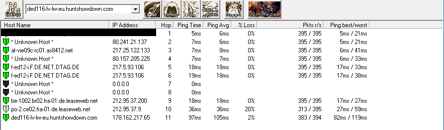
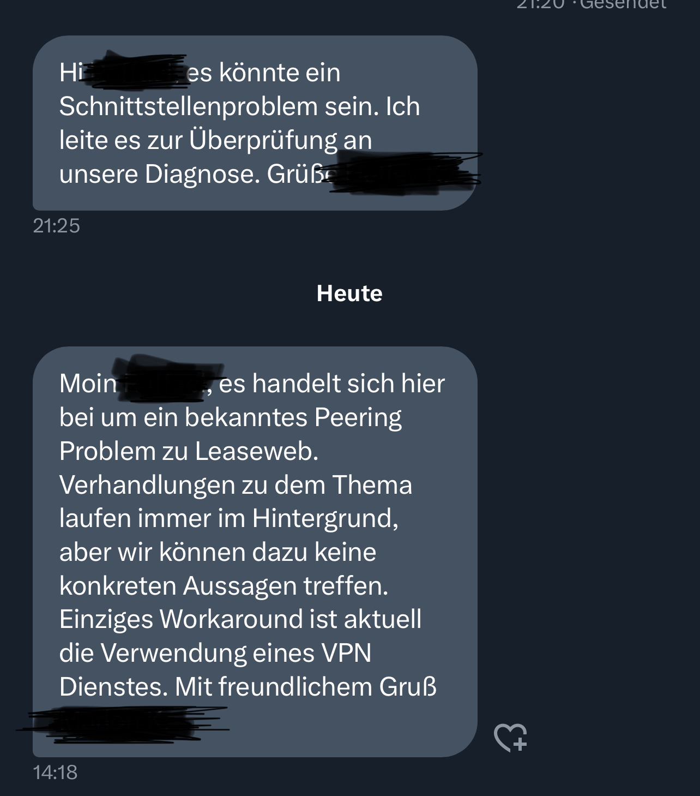

seit einigen Tagen habe ich einen extrem hohen Ping (130 - 190) in Hunt Showdown wenn ich auf EU Server spiele. Auf russischen Server funktioniert alles einwandfrei. Ich würde natürlich lieber auf EU Server spielen. Zumal ich ja auch nicht immer der bin, der bestimmt, auf welchem Server wir spielen.
Lt. Reddit könnte das am Provider liegen. Habt ihr hier ähnliche Erfahrungen gemacht? Bei Freunden funktioniert alles normal. Die haben aber kein Magenta.
bbi
Jetzt gibt es eine Bekanntes Problem wenn das nur von ungefähr 17 bis 23 uhr passiert. Sie sagen sie arbeiten dran, aber wir müssen immer anrufen und fragen. Ich selbst habe schon mit mehr als 5 Leute getestet und wir haben das selbe Problem.
Wenn du aber das ganze Tag oder nicht an diese konsistente Zeitraum hast dann ist ein anderes Problem. Lieber Techniker bei dir anschauen lassen oder weitere Fehlerbehebung machen.
FuLong
Wer arbeitet dran? Magenta? Oder Crytek?
Ja, es tritt bei mir zwischen 17:00 und 23:00 Uhr auf. Hatte bis vor kurzem noch keine Probleme und Freunde von mir (nicht Magenta) haben auch keine Probleme.
bbi
vor 3 Stunden schrieb FuLong:
Wer arbeitet dran? Magenta? Oder Crytek?
Ja, es tritt bei mir zwischen 17:00 und 23:00 Uhr auf. Hatte bis vor kurzem noch keine Probleme und Freunde von mir (nicht Magenta) haben auch keine Probleme.
Crytek kann da nix machen, du siehst eh dass nur bei Magenta diese Probleme gibt.
Da aber bis vor kurzem noch keine Probleme gabts bei dir denke ich eher dass eine andere Problem ist, ich habe seit November jeden Tag test gemacht, und ping geht von 17~ uhr auf 100+ und 23 uhr wieder zurück auf 20 bei bestimmten Wien/Frankreich carrier nodes
Wäre cool wenn du mal tracert results in paar stunden hier posted und schauen ob bei dir auch bei gleiche node das ping erhöht.
Bearbeitet
von bbi
FuLong
Du hast geschrieben, dass "sie dran arbeiten". Weißt du das mit Sicherheit?
bbi
Am 2/20/2023 um 16:24 schrieb FuLong:
Du hast geschrieben, dass "sie dran arbeiten". Weißt du das mit Sicherheit?
Nein, das hat der Support beim Hotline mir gesagt, Sie wissen die details auch nicht, nur das die IT-Team schon daran arbeitet.
Ich habe schon gefragt ob sie genauer details geben kann, aber sie meinte sie bekommt nur eine Antwort dass das IT Team arbeitet dran und sie wissen schon das es ein Problem gibt.
Bearbeitet
von bbi
FuLong
Kurzer Status, falls hier auch andere mitlesen: Für die Magenta Kunden in meiner Spielrunde ist Hunt:Showdown auf EU Server nach wie vor unspielbar (teilweise Ping bis 180). Manchmal sind die EU Server nichtmal auswählbar.
Bei allen Nicht-Magenta Kunden funktioniert alles tadellos.
bbi
Kurze Update von mir auch.
Wieder angerufen und mir wurde gesagt dass sie eine PriotitätListe haben und die Ping probleme werden erst später gelöst.
Er meinte magenta hat derzeit nicht genug Techniker, und Probleme zu TV-Box wechseln und Ausfälle reparieren ist ihre erste Priorität.
Ich kann nur bitten mehr leuten dort wegen diese Problem anzurufen, wenn nur 2,3 leute das macht, werden diese Problem immer unter in der Priotitätsliste geschoben. Er hat mir auch so ehrlich gesagt wenn nur wenig leute melden, ist eher unwharscheinlich dass die Team was tut.
stevex
Guten Morgen,
habe das selbe Problem. Leider ist das Game momentan durch den High Ping und Paket verlust unspielbar.
Sanchezlul
Am 24.2.2023 um 07:31 schrieb FuLong:
Kurzer Status, falls hier auch andere mitlesen: Für die Magenta Kunden in meiner Spielrunde ist Hunt:Showdown auf EU Server nach wie vor unspielbar (teilweise Ping bis 180). Manchmal sind die EU Server nichtmal auswählbar.
Bei allen Nicht-Magenta Kunden funktioniert alles tadellos.
Hab dasselbe Problem jetzt auch schon seit ein paar Wochen. Hat sich bei dir schon was geändert?
Karo
Hallo zusammen,
wir möchten euch dabei unterstützen und helfen, Fälle gezielt an das Technikteam für eine Überprüfung weiterzuleiten.
1) Wir brauchen die IP vom Hunt Server (Crytek - Wie lautet die IP?)
2) Habt ihr die IP bekommen, führt bitte auf diese IP einen Tracert durch.
Bitte vergesst nicht, beim Kontaktformular auch gleich eure Kundendaten anzugeben.
So können sich unsere Kolleg*innen vom Technikteam um eine genaue Analyse kümmern.
LG Karo
Leider kann ich keine Anfrage senden da das Internet auf einen Mitbewohner läuft und dieser seine Anmeldedaten nicht mehr weis. Ich schicke aber den Screenshot vom Tracing mit.
unsere Techniker*innen haben sich gemeldet und konnten die Behebung der Problematik angehen. Jetzt wird allerdings noch ein Tracerouting vom Gaming-Server zu einem eurer Modems benötigt. Dazu müsste jemand die Firma Crytek ins Boot holen. Den das Ergebnis dann bitte wieder hier posten.
Danke und lG JD.
Nomis
Hi Zusammen,
Ich hab genau das gleiche Problem ping auf z.B. google DNS 24ms ... in Hunt Showdown Europe Server 124ms mit gigakraft gaming 300 also auch noch docsis 3.1. ... hätte fast geglaubt dass es an den Crytek Servern liegt aber was ich hier so lese scheint es ein Problem seitens Magenta zu sein. Spiel ist so unspielbar bitte um Behebung!
Danke und sG,
Nomis
bbi
vor 11 Stunden schrieb Karo:
Hallo zusammen,
wir möchten euch dabei unterstützen und helfen, Fälle gezielt an das Technikteam für eine Überprüfung weiterzuleiten.
1) Wir brauchen die IP vom Hunt Server (Crytek - Wie lautet die IP?)
2) Habt ihr die IP bekommen, führt bitte auf diese IP einen Tracert durch.
Bitte vergesst nicht, beim Kontaktformular auch gleich eure Kundendaten anzugeben.
So können sich unsere Kolleg*innen vom Technikteam um eine genaue Analyse kümmern.
LG Karo
17697671 ist die Antragsnummer, dise sceenshots habe ich ende Jänner zum zweiten mal geschickt, beim Telefon wurde gesagt es wurde weiter geleitet, aber Progress von Techniker höhren wir nicht, diese Problem gibts seit November. Jeden Tag gleiche Zeitraum zu gewissen servers 100+ ping.
Beim screenshots sieht man wenn es durch 62.157.248.249 oder 87.128.239.253 oder 80.157.205.225 gehts gibts problem
Alle drei sind Privaten Peering punkte von Deutsche Telekom. Es gibt sicher mehr ähliche Problematische nodes aber es gibt nur Probleme wenn die Traffic durch ähnliche Privaten Node gehen.
Verbindungssättigung auf Transitverbindung ist die einzige mögliche Problem hier,
Wir alle einfach nicht durch deutsche Telekom zu Routen ist das einachste fix. Es muss möglich sein wenn wir beschwerden was zu ändern. Dieses Problem ist nur für Gamer wichtig weil wir kein hohes ping haben können.
floro77
Und tut sich was, oder lassts uns noch 3 Monate deppert sterben ?
stevex
Am 28.2.2023 um 10:06 schrieb Karo:
Hallo zusammen,
wir möchten euch dabei unterstützen und helfen, Fälle gezielt an das Technikteam für eine Überprüfung weiterzuleiten.
1) Wir brauchen die IP vom Hunt Server (Crytek - Wie lautet die IP?)
2) Habt ihr die IP bekommen, führt bitte auf diese IP einen Tracert durch.
Hier Nocheinmal ein trace+reverse-trace zu Problemetike noden, ip.twelve ist von arelion(Telia) und viele Websiten und gameserver werden über arelion(Telia) geroutet.
Wie man hier sieht 21uhr von ffm-b5, ein Telia server in Frankfurt, 100+ping, deswegen wird alle websiten/games die durch twelve.99 geht eine selbe hohe ping haben. Btw bei A1 und Drei auch schon getestet, kein solche Problem dort.
Links ist das looking-glass Reverse traceroute von Telia zu meinem Router, und rechts ist von meinem Router zur Telia.
ffm-b5 ist nicht das Einzige Problematike peeringpunkt, diversen win-bb ffm-bb prs-bb ldn-bb nodes zeigt fast alle probleme.
Und nocheinmal getestet Ab 23 uhr. Hier sieht man das alles wieder normal ist, diese Problem kann man
jeden Tag
zur gleichen Zeiten Reproduzieren,
für 3 Monate, kein einziges Tag normale ping am Abend.
Kann ich bitte eine Antwort von Techniker von diese Problem höhren? Oder muss ich jemand zu mir zuhause shicken lassen und dann erst was Technisches höhren? Am Telefon wird nie uns Infos gegeben an was sie arbeiten und ob sie überhaupt eine Probleme sehe.
PS: Ist mir gerade noch was aufgefallen, Back in November, gabts genau so eine Problem zur 1.1.1.1 , man kann das noch in LTE forum lesen, man sieht dass alle Magenta Kunden 100+ ping zur 1.1.1.1 von 17 bis 22 uhr haben. Aber das wurde nach 3~4 Wochen gelöst, hier gehts sicher um das selbe Problem, warum können wir das hier nicht auch lösen? Weiß Techniker was von der 1.1.1.1 Situation in November?
Bearbeitet
von bbi
TastyTacco
Hallo zusammen. Das Problem habe ich in genau der Form auch. Hunt abends mit Telekom Magenta leider unspielbar.
Mein Workaround: VPN nutzen. Ich habe mir einen Testaccount gemacht und nu läufts. Ping ist zwar von ursprünglich 20 hoch auf 40 aber die spürbare Verzögerung ist weg und ohne VPN waren es 120 mit dem vollen Warnleuchtenkarussell. Wenn ihr das gratis testen wollt könnt ihr bei Cyber Ghost die Bezahlversion für 24h kostenlos nutzen um zu sehen, ob das mit dem VPN euch auch hilft. (Gaming server Frankfurt auswählen) Danach könnt ihr ja bei jedem beliebigen Anbieter buchen. Oder evtl. habt ihr auch schon einen. Ich weiß, keine echte Lösung des Problems aber für alle die zocken wollen eventuell eine Übergangslösung.
Schöne Grüße
CwT
ich habe auch mal einen fehlerreport geschrieben, ich sehe immer die leaseweb.net server als Fehlergrund, siehe screenshot:

Bearbeitet
von CwT
MrDoran
Push - habe das exakt gleiche Problem wie FuLong und bbi beschrieben haben
PatPat
Hi, hab mich extra registriert um ebenfalls mitzuteilen, dass mein Ping seit einigen Wochen in Hunt: showdown eine Katastrophe ist. Meistens zwischen 120 und 200. Also ein shootergame sollte man so nicht zocken. Das macht keinen Sinn.
govindam
hier auch seit längerem unspielbar! bei meinen Freunden geht es, das problem ist nur bei magenta.
falls das problem nicht bald gelöst wird überlege ich den anbieter zu wechseln
SoulReaver
Am 4.3.2023 um 21:42 schrieb TastyTacco:
Hallo zusammen. Das Problem habe ich in genau der Form auch. Hunt abends mit Telekom Magenta leider unspielbar. Mein Workaround: VPN nutzen................
Das heißt in dem Fall die Lösung ist VPN und Magenta und die Telekom ist aus dem "Schneider"? Das ist leider zu einfach. Ich zahle sicherlich nicht 50€ im Monat, und muss mir noch einen VPN Dienst anschaffen. Und abseits davon ist es nicht die Lösung. Das Netz ist voll von Usern die trotz VPN Probleme haben.
Bin ebenfalls betroffen und ich erwarte mir jetzt dann schon mal, das Magenta hier Stellung bezieht und erklärt, warum
ausschließlich
Telekom und somit Magenta Kunden Probleme haben? Und wie oben von
govindam
beschrieben kenne ich auch Bekannte die bereits Magenta gekündigt haben. Das kann auch nicht die Lösung sein. Die Telekom in Deutschland hat schon mal Stellung bezogen und sagt es liege an den Servern von Crytek. Dann liebe Telekom erklären sie doch mal, warum andere User die nicht bei der Telekom und Magenta sind keine Probleme
zu keiner Zeit haben
?
Abseits davon trotzdem ein Danke an die Moderatoren die sich sich melden. Das ist weitaus mehr als man am Telefon erreichen kann. Leider...
Bearbeitet
von SoulReaver
ansark
Hi all, had the same issue, wrote to the support, here what they answered:
(1/3) Sehr geehrter Kunde,betreffend Spiel Hunt: Showdown,das Problem wurde schon vor paar Wochen an die DTAG weitergeleitet, die DTAG sieht das Problem(2/3) nicht bei sich, sprich Leaseweb Deutschland GmbH hat zu wenig packet Volumen bei DTAG gekauft , das Ergebnis ist das ab gewisse Uhrzeit die Latenz in(3/3) die höhe kommt.Ihr Magenta Serviceteam.
Not sure what this means, german not my first language.
MrDoran
vor 9 Minuten schrieb ansark:
Hi all, had the same issue, wrote to the support, here what they answered:
(1/3) Sehr geehrter Kunde,betreffend Spiel Hunt: Showdown,das Problem wurde schon vor paar Wochen an die DTAG weitergeleitet, die DTAG sieht das Problem(2/3) nicht bei sich, sprich Leaseweb Deutschland GmbH hat zu wenig packet Volumen bei DTAG gekauft , das Ergebnis ist das ab gewisse Uhrzeit die Latenz in(3/3) die höhe kommt.Ihr Magenta Serviceteam.
Not sure what this means, german not my first language.
This basically means that Leaseweb (hosting Hunt: Showdown Servers) has not enough package volume to the main internet hub in Frankfurt from Deutsche Telekom AG - so they have a bottleneck with active users and therefore higher ping, package loss etc.
Magenta Routing on the Backbone apparently is with Deutsche Telekom AG to Frankfurt Server - so therefore DTAG and Magenta Users have the high ping/package loss problem with the game
Nothing where the ISP really could help - this needs to be adressed by Crytek and/or Leaseweb and they need to improve the connection with Deutsche Telekom AG
FuLong
Hallo,
seit einigen Tagen habe ich einen extrem hohen Ping (130 - 190) in Hunt Showdown wenn ich auf EU Server spiele. Auf russischen Server funktioniert alles einwandfrei. Ich würde natürlich lieber auf EU Server spielen. Zumal ich ja auch nicht immer der bin, der bestimmt, auf welchem Server wir spielen.
Lt. Reddit könnte das am Provider liegen. Habt ihr hier ähnliche Erfahrungen gemacht? Bei Freunden funktioniert alles normal. Die haben aber kein Magenta.
FuLong
vor einer Stunde schrieb ansark:
Hi all, had the same issue, wrote to the support, here what they answered:
(1/3) Sehr geehrter Kunde,betreffend Spiel Hunt: Showdown,das Problem wurde schon vor paar Wochen an die DTAG weitergeleitet, die DTAG sieht das Problem(2/3) nicht bei sich, sprich Leaseweb Deutschland GmbH hat zu wenig packet Volumen bei DTAG gekauft , das Ergebnis ist das ab gewisse Uhrzeit die Latenz in(3/3) die höhe kommt.Ihr Magenta Serviceteam.
Not sure what this means, german not my first language.
This means that the problem lies with Crytek or their server provider Leaseweb. At least that's what Deutsche Telekom (in Austria -> Magenta) says.
bbi
Wenn sie wirklich so sagen, dann können wir schon vergessen, weil Crytek würde sicher nicht extra Deutche Telekom zahlen, damit sie eine bessere Routing bekommt.
Hab noch so bissle geschaut, das Problem ist höhst möglich überlastung von der Peeringspunkte, und DTAG verlangt von leaseweb/telia usw geld, damit die brandbreite verbessert wird. Und wenn sie nicht zahlen bleibt die Verbindung schlecht und wir oder normale Magenta Techniker können da nix machen. Weil da kein "Problem" gibt, sodern einfach nicht genug Brandbreite zur Verfüfgung ist.
Ich werde sie noch immer nerven weil ich derzeit nicht wechseln kann, aber sobald es möglich ist bin ich weg.
stevex
vor 7 Minuten schrieb bbi:
Wenn sie wirklich so sagen, dann können wir schon vergessen, weil Crytek würde sicher nicht extra Deutche Telekom zahlen, damit sie eine bessere Routing bekommt.
Hab noch so bissle geschaut, das Problem ist höhst möglich überlastung von der Peeringspunkte, und DTAG verlangt von leaseweb/telia usw geld, damit die brandbreite verbessert wird. Und wenn sie nicht zahlen bleibt die Verbindung schlecht und wir oder normale Magenta Techniker können da nix machen. Weil da kein "Problem" gibt, sodern einfach nicht genug Brandbreite zur Verfüfgung ist.
Ich werde sie noch immer nerven weil ich derzeit nicht wechseln kann, aber sobald es möglich ist bin ich weg.
Ich werde ebenso den Vertrag fristgerecht Kündigen, zahle monatlich genug für das Internet, da wechsle ich lieber und ärgere mich weniger. Ich sehe es auch nicht ein deswegen ein VPN anzuschaffen und noch mehr zu zahlen.
ribi
Ebenso extra angemeldet um zu berichten, dass das Problem da und das Spiel damit quasi unspielbar ist. Wäre toll wenn sich ein Moderator oder besser Magenta dazu nochmal meldet. Verstehe ehrlich gesagt nicht ganz, wie die Telekom das Problem scheinbar abwälzt, wenn das Routing bei Ihnen schief läuft?
stevex
Crytec hat folgendes geschrieben:
Thanks for your message.
We are aware of similar issues with other ISPs, and we have tried some tweaking which seems to have helped with the Deutsche Telekom users in particular.
We have escalated this thread to the NetOPS team, and hopefully something can be done in this case, but we can't really assure you that this will happen in the short term.
We will continue working hard to offer the best possible experience to all our users, and hopefully this will translate for you too.
In the future, for Hunt: Showdown support tickets please contact us through the official game website:
www.huntshowdown.com
FuLong
"In the future, for Hunt: Showdown support tickets please contact us through the official game website:"
Ja. Nein. Wir schreiben es z.B. (auch) hier, damit man mitlesen kann.
Ok, also wälzt das Problem jeder ab. Von wem bekomme ich jetzt das Geld zurück? Kann ich meinen Magenta Vertrag frühzeitig kündigen, da das Versprechen "das Internet für Gamer" ganz offensichtlich nicht eingelöst wird? Gibt mir Crytek das Geld für Hunt zurück, weil ich auf EU Server nicht spielen kann? Es kann ja nicht die Lösung sein, dass der Kunde am Ende kein gutes Produkt erhält, weil sich Leaseweb, Crytek und Magenta/deutsche Telekom nicht einig werden. "Der andere ist schuld" ist keine zufriedenstellende Problemlösung.
MrDoran
vor 1 Minute schrieb FuLong:
"In the future, for Hunt: Showdown support tickets please contact us through the official game website:"
Ja. Nein. Wir schreiben es z.B. (auch) hier, damit man mitlesen kann.
Ok, also wälzt das Problem jeder ab. Von wem bekomme ich jetzt das Geld zurück? Kann ich meinen Magenta Vertrag frühzeitig kündigen, da das Versprechen "das Internet für Gamer" ganz offensichtlich nicht eingelöst wird? Gibt mir Crytek das Geld für Hunt zurück, weil ich auf EU Server nicht spielen kann? Es kann ja nicht die Lösung sein, dass der Kunde am Ende kein gutes Produkt erhält, weil sich Leaseweb, Crytek und Magenta/deutsche Telekom nicht einig werden. "Der andere ist schuld" ist keine zufriedenstellende Problemlösung.
Ich verstehe deine Enttäuschung - stevex hat die Antwort von Crytek eh gepostet - sie haben schon etwas geändert um die Verbindung zu DTAG zu verbessern und an das NetOPS Team weitergeleitet die versuchen das Problem zu lösen
aktuell habe ich so ~70 Ping und Packet-Loss hat sich deutlich gebessert
stevex
Habe heute noch folgende Antwort von Crytec bekommen, werde es nach der Arbeit probieren und Euch informieren.
Dear Stephan,
Just an update, we have performed some changes on our end, and it would be very interesting to know if the ping will be better starting today.
Would you have the opportunity to play the game today afternoon, and let us know if it is better for you?
Regards,
Thomas - Crytek Customer service
ansark
vor 5 Minuten schrieb stevex:
Habe heute noch folgende Antwort von Crytec bekommen, werde es nach der Arbeit probieren und Euch informieren.
Dear Stephan,
Just an update, we have performed some changes on our end, and it would be very interesting to know if the ping will be better starting today.
Would you have the opportunity to play the game today afternoon, and let us know if it is better for you?
Regards,
Thomas - Crytek Customer service
sheeesh! great news, lets seee
bbi
vor einer Stunde schrieb MrDoran:
Ich verstehe deine Enttäuschung - stevex hat die Antwort von Crytek eh gepostet - sie haben schon etwas geändert um die Verbindung zu DTAG zu verbessern und an das NetOPS Team weitergeleitet die versuchen das Problem zu lösen
aktuell habe ich so ~70 Ping und Packet-Loss hat sich deutlich gebessert
Problem startet immer erst abends und geht bis zur 23 uhr. Zum Beispiel jetzt gerade habe ich nur 20~35 ping, aber in paar stunden wird es anders schauen.
Ich habe Statistiken von 3 Monaten, und Problem nie zwischen 23 und 16 uhr gefunden. egal arbeitstag oder Wochenende.
stevex
vor 2 Minuten schrieb bbi:
Problem startet immer erst abends und geht bis zur 23 uhr. Zum Beispiel jetzt gerade habe ich nur 20~35 ping, aber in paar stunden wird es anders schauen.
Ich habe Statistiken von 3 Monaten, und Problem nie zwischen 23 und 16 uhr gefunden. egal arbeitstag oder Wochenende.
Hallo BBi,
ich muss sowieso bis 18:00 Uhr Arbeiten und kann es erst um ca. 19:30 probieren.
Lg
stevex
Hallo Community,
wir ihr wahrscheinlich selber festgestellt habt ist das Problem immer noch da. Zwar ist der Paketverlust besser aber momentan liegt der Ping über 120. Ich habe Crytec jetzt nochmal auf Ihr Mail geantwortet und ihnen auch einen aktuellen tracert gesendet. Leider können wir nun nur auf die Antwort warten. Sehr schade. Vielleicht meldet ihr das Problem ja auch auf der Hunt Shodown Seite direkt, dann haben die etwas mehr druck
Schöne Grüße
FuLong
Interessanterweise konnte ich heute einwandfrei spielen. Testmatch um 18:00 Uhr -> Ping zwischen 28 und 60, Testspiel 19:00 Uhr -> Ping zwischen 30 und 60. Mal gucken, wie es um 20:00 aussieht, aber bei mir ist es offenbar wieder so wie von vor ein paar Wochen.
bbi
vor 20 Minuten schrieb FuLong:
Interessanterweise konnte ich heute einwandfrei spielen. Testmatch um 18:00 Uhr -> Ping zwischen 28 und 60, Testspiel 19:00 Uhr -> Ping zwischen 30 und 60. Mal gucken, wie es um 20:00 aussieht, aber bei mir ist es offenbar wieder so wie von vor ein paar Wochen.
schik mal tracert wenn's bei dir alles okay ist, vielleicht sehen wir was bei dir anders ist als wie bei mir und stevex, bei mir leider jetzt auch, 100ping average, um 18 uhr noch 30.
ansark
Am 3/9/2023 um 4:17 PM schrieb stevex:
I got the following answer from Crytec today, will try it after work and inform you.
Dear Stephan,
Just an update, we have performed some changes on our end, and it would be very interesting to know if the ping will be better starting today.
Would you have the opportunity to play the game today afternoon, and let us know if it is better for you?
Regards,
Thomas - Crytek Customer service
nope, still bad ping
ribi
Keine Packetlosses mehr scheinbar - aber ping auf 90-120 statt sonst 40.
bbi
Packet loss eher habe ich nie oder sehr selten beim testen gehabt, kann sein das hier nix mit Magenta oder Deutche Telekom zu tuen ist.
Aber nur Magenta oder Deutsche Telekom kann das Ping/Peering Punkt fixen, Crytek kann das Spiel Server gleich neben Deutsche Telekom bauen, aber wenn's durch die überlastet noden routet, gibts problem.
Erklährt auch warum ein VPN das Problem fixiert. weil der Traffic dann nicht mehr durch deutche telekom geht.
Am 28.Februar haben beiden Moderators scheinbar kontakte mit Techniker genommen, bis heute aber noch immer kein News, es wäre wirklich hilfrech wenn wir was von Wirklichen Techniker team höhren, und was sie zu diese Problem sagen. Nicht das sie eine Problem sehe sonder genauer Infos und was wir erwarte kann. Es kann ja nicht sein das wir nur mit PR-team oder level1 redet..
Weil nur schätzen wo das Problem liegt werden wir nie eine Lösung finden,
telekomsucks
DIE SERVER SUGEN NACH WIE VOR ARSCH KÜNDIGUNG IST RAUS UND ANZEIGE EBENSO
govindam
ich teste jeden TAG und es ist immer über 120ms, ...kannste knicken!
was ist nur los mit der technik von magenta?
SoulReaver
Am 12.3.2023 um 15:05 schrieb telekomsucks:
DIE SERVER SUGEN NACH WIE VOR ARSCH KÜNDIGUNG IST RAUS UND ANZEIGE EBENSO
Bei Magenta Kündigen kann man immer. Und anzeigen willst du was und wen?
Abseits davon von den Moderatoren kein Statement. Techniker melden sich so wieso nicht. Ich warte schon ewig auf Rückrufe der Technik. Als UPC von Magenta übernommen wurde, war das der Anfang vom Ende. UPC war super.
Luciyon12
Aber Crytek hat zu dem Thema noch nie Stellung bezogen? In Discord oder per Mail?
Zu dem Thema hab ich im letzten developer stream auch nichts gesehen das die davon wüssten
PatPat
Ja ist schon echt ein Armutszeugnis, dass Entwickler bei solchen Problemen nicht ordentlich dazu Stellung beziehen. Ich bin aber z.B. keine Magenta Kunde. Ich bin aus Südtirol (Italien) und Wind/Tre Kunde und der Ping war vor ein/zwei Monaten noch nicht so grottenschlecht bei Hunt showdown. Bei anderen Games habe ich überhaupt keine Ping-probleme.
Seit einigen Tagen bekomme ich allerdings hin und wieder nen Server wo der ping ok ist in hunt. Aber das match danach läuft wider mit über 140 ping.
stevex
Am 9.3.2023 um 16:25 schrieb bbi:
Problem startet immer erst abends und geht bis zur 23 uhr. Zum Beispiel jetzt gerade habe ich nur 20~35 ping, aber in paar stunden wird es anders schauen.
Ich habe Statistiken von 3 Monaten, und Problem nie zwischen 23 und 16 uhr gefunden. egal arbeitstag oder Wochenende.
Hallo BBi,
ich muss sowieso bis 18:00 Uhr Arbeiten und kann es erst um ca. 19:30 probieren.
Lg
Habe eine neue Antwort von Crytec....
Dear customer,
We have tried a change in settings, but if that doesn't work unfortunately the only other possibility would be some changes by the ISP themselves.
If you have the time, could you please try to inquire with them about this? Would it be possible for them to change your routing to our servers?
You can provide 178.162.217.65 as a reference IP.
Best regards,
Blakki73
govindam
ich teste jeden TAG und es ist immer über 120ms, ...kannste knicken!
was ist nur los mit der technik von magenta?
Ist eher sehr unwahrscheinlich dass diese Problem gelöst werden.
Laut Techniker von ihren Experten sind bei Magenta Netz kein problem, was auch stimmt, problem liegt bei Deutsche Telekom nodes.
Dadurch Ist jetzt leider sehr klar dass dies nicht ein problem was Magenta Österreich lösen kann, Sie können das nur an DTAG weiterleiten aber sie werden zur 100% ignoriert.
Was wir noch machen kann ist deutsche telekom emails schreiben aber für Sie sind uns egal da wir kein Richtiges Kunden sind im Deutschland.
Ich werde noch shauen ob eine Rerouting durch alle dtag nodes möglich ist, wenn nicht dann muss ich 5euro extra für vpn jedes Monat zahlen bevor ich wechseln..
FuLong
Hallo,
seit einigen Tagen habe ich einen extrem hohen Ping (130 - 190) in Hunt Showdown wenn ich auf EU Server spiele. Auf russischen Server funktioniert alles einwandfrei. Ich würde natürlich lieber auf EU Server spielen. Zumal ich ja auch nicht immer der bin, der bestimmt, auf welchem Server wir spielen.
Lt. Reddit könnte das am Provider liegen. Habt ihr hier ähnliche Erfahrungen gemacht? Bei Freunden funktioniert alles normal. Die haben aber kein Magenta.
impact_frost

Das war die Antwort von Telekom Support, also 50€ Vertrag + VPN auf unbestimmte Zeit kaufen seh ich jetzt nicht so als Lösung.
Luciyon12
Also ich hab es gestern mit Nord vpn probiert da gibt es gerade 30 Tage Geld zurück Garantie
Und ich war echt erstaunt Freitag Abend von 18uhr bis 1uhr nachts konstant einen Ping von 19 gehabt und keinen Paket lost. Also für alle die wenigstens ein paar Tage ohne Probleme spielen wollt nehmt den probe Monat
sw1
Das beschrieben Problem kommt mir bekannt vor, allerdings betrifft es bei mir kein Gaming sondern generell die Erreichbarkeit von bestimmten Webseiten in den Abendstunden
Sieh Thread hier:
govindam
Am 15.3.2023 um 17:30 schrieb bbi:
Neueste update bei Techniker Hotline.
Ist eher sehr unwahrscheinlich dass diese Problem gelöst werden.
Laut Techniker von ihren Experten sind bei Magenta Netz kein problem, was auch stimmt, problem liegt bei Deutsche Telekom nodes.
Dadurch Ist jetzt leider sehr klar dass dies nicht ein problem was Magenta Österreich lösen kann, Sie können das nur an DTAG weiterleiten aber sie werden zur 100% ignoriert.
Was wir noch machen kann ist deutsche telekom emails schreiben aber für Sie sind uns egal da wir kein Richtiges Kunden sind im Deutschland.
Ich werde noch shauen ob eine Rerouting durch alle dtag nodes möglich ist, wenn nicht dann muss ich 5euro extra für vpn jedes Monat zahlen bevor ich wechseln..
Ich hab mir auch ein VPN (for free) gecheckt, und die ms sind auf 40 runter...
-> proton vpn
PS.: f*** MAGENTA !!! ich hab nach meinem Anruf seit wochen noch immer keine Antwort von der technik bekommen! es ist ne frechheit, die im callcenter haben null ahnung, wollen mir irgend ein sch*** Produkt andrehen was mehr kostet aber das Problem nicht beheben kann UND dann schlagen sie vor ich soll mein Modem neustarten... tz, echt lächerlich der Service!!!
govindam
FuLong
Wie läuft es bei euch grade? Es ist bald 20:00 und mein Ping auf EU Server ist noch gut. Gab's da eine Änderung?
MrDoran
vor 3 Stunden schrieb FuLong:
Wie läuft es bei euch grade? Es ist bald 20:00 und mein Ping auf EU Server ist noch gut. Gab's da eine Änderung?
Crytek hat ja im DEV Stream und sogar in den Patch Notes 1.12 angekündigt, dass sie an dem Thema mit einer Task Force arbeiten und einige Dinge ausprobiert haben, war regelmäßig mit dem Crytek Support im Kontakt deswegen "haben was geändert, funktioniert es jetzt?" 3-4x
Und ich habe jetzt schon einige Tage überhaupt keine Ping/Packet Loss Probleme mehr. Die Arbeit von Crytek dürfte sich also ausgezahlt haben
Weiß nicht wieso einige Leute sofort so geflamed haben - wenn Crytek eh schon mehrfach, sogar im Developer Stream! sagt, dass sie daran arbeiten - bei mir funktioniert alles wieder wie geschmiert
Manche Dinge lassen sich halt nicht von jetzt auf gleich lösen
FuLong
Am 1.4.2023 um 23:41 schrieb MrDoran:
Crytek hat ja im DEV Stream und sogar in den Patch Notes 1.12 angekündigt, dass sie an dem Thema mit einer Task Force arbeiten und einige Dinge ausprobiert haben, war regelmäßig mit dem Crytek Support im Kontakt deswegen "haben was geändert, funktioniert es jetzt?" 3-4x
Und ich habe jetzt schon einige Tage überhaupt keine Ping/Packet Loss Probleme mehr. Die Arbeit von Crytek dürfte sich also ausgezahlt haben
Weiß nicht wieso einige Leute sofort so geflamed haben - wenn Crytek eh schon mehrfach, sogar im Developer Stream! sagt, dass sie daran arbeiten - bei mir funktioniert alles wieder wie geschmiert
Manche Dinge lassen sich halt nicht von jetzt auf gleich lösen
Es freut mich natürlich, dass alles wieder funktioniert. Aber die Leute haben nicht "sofort" geflamed. Ich hab fast zwei Wochen gewartet und gegoogelt. Irgendwann war's aber klar, dass das hauptsächlich Kunden der deutschen Telekom oder Magenta betrifft. Und dann hat das Spiel de fakto zwei Monate (!) nicht funktioniert. Zusätzlich hat Crytek in den vorherigen DevStreams auch noch gemeint, dass sich da auf absehbare Zeit nichts ändern wird (da war noch keine Rede von Task Force und dergleichen). Dass es jetzt wieder funzt, ist schön aber zwei Monate waren es halt trotzdem.
Kannst du ja gern mal bei CS:Go probieren und dann gucken, was los ist.
Wie auch immer, schön dass es wieder läuft.
Falls das Problem mal wieder auftritt uns sich jemand hierher verirrt: Es liegt vermutlich nicht an deinen Einstellungen sondern am Anbieter oder an den Servern von Crytek (Leaseweb). Als Zwischenlösung hat bei mir ein VPN sehr gut funktioniert.
Harondale
Hallo!
Ich habe genau das selbe Problem.
Immer zur selben Zeit ab 18:00, kann ich zuschauen, wie der Ping immer höher und höher wird und es hält bis ca. 23:00 an, wo für mich dann wieder Schlafenszeit ist.
Seit Wochen bin ich schon am herumtelefonieren, am optimieren meinerseits und ständig scheint alles in Ordnung zu sein.
Techniker, PC neu aufsetzen, etc. ich habe nichts ausgelassen, was eventuell von meiner Seite aus hätte schief gehen können.
Auch bekam ich eine Zeitlang von meiner 300er Mbit Leitung (die natürlich am LAN-Kabel bzw. am Computer damit hängt) nicht mal mehr ein Zehntel der Bandbreite rein, was durch das bis jetzt vierte Modem innerhalb von einem Monat behoben wurde.
An meinem Ursprungsproblem mit dem steigenden Ping, hat es jedenfalls genau gar nichts geändert.
Darüberhinaus habe ich es mit meinem Telefon (A1) über den Hotspot mal versucht und der Ping war nicht zu vergleichen.
Viel besser und stabiler.
Auch habe ich das Game auf dem Handy heruntergeladen, da dies auch möglich ist und hatte das W-LAN von Magenta dabei am laufen.
Ingame Ping 230+ (normal wären 120-140) und kaum das W-LAN ausgeschalten, ZACK! einfach mal instant auf die 145 runtergefallen.
Ich habe ebesno die Tracert-Route an den Kundendienst gesendet und es wäre eine eventuelle Überlastung des Gaming-Servers, was aber nicht sein kann, da es mit dem Hotspot schließlich besser funktioniert und mehrere Spiele davon betroffen sind.
the_xar
Ich habe exakt das gleiche Problem beim Spielen von Hell Let Loose, mir ist aber aufgefallen, dass es generell Verbindungen nach Frankfurt zu betreffen scheint; Server in den UK oder anderswo erreiche ich meist mit deutlich geringerer Latenz und stabilerer Verbindung.
Ich habe mir testweise ein VPN gebucht und siehe da: Wenn ich einen Einstiegspunkt ausserhalb von Frankfurt (bzw. Deutschland) wähle, beträgt die Latenz z.T. nur die Hälfte bzw. ein Drittel... es ist wirklich lächerlich; denke mittlerweile auch über einen Providerwechsel nach...
{kind=link}
{kind=link}
{kind=link}
{kind=link}